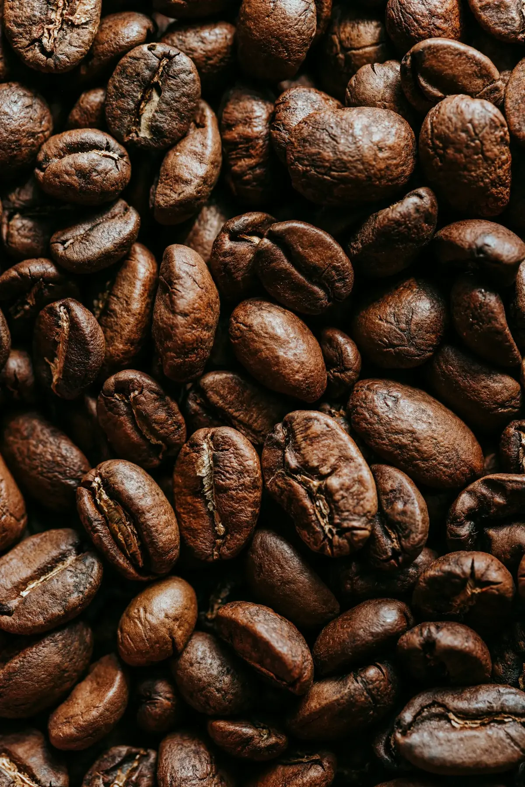
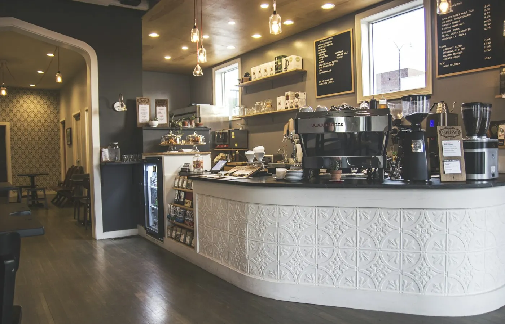

烘焙记录 · #0926耶加雪菲 · 水洗
豆温升温速率
本季豆单
四支豆子，四种风土。每支都标好了产地、海拔和我们的烘焙度，挑不准就从耶加雪菲开始。
-
01日晒
-
02水洗
-
03厌氧发酵
-
04水洗

同一支豆子，
烘深烘浅是两杯咖啡。
烘焙度决定了你喝到的是果酸还是焦糖。拖动下面的滑块，看豆子颜色和风味怎么一起变。
酸甜平衡
果酸还在，但已经有了红糖和坚果的甜感。适合手冲，也能做一杯不苦的美式。
- 01挑豆
每季只留 4 支，杯测 85 分以上才进豆单。
- 02小批量烘
每锅 3 公斤，按曲线手动控火，每一锅都有记录。
- 03养豆
出炉后静置 5 到 7 天再上架，风味才完全打开。
两家店
烘焙工坊在西溪，周一烘豆不开门；南山路店离西湖步行十分钟。
